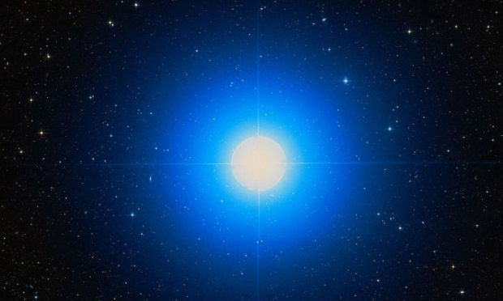
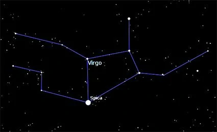

Spica

Spica é uma estrelas utilizadas para navegação marítima, permitindo calcular a latitude e longitude. Por estar a apenas 2,06 graus da eclíptica, a
estrela pode ser ocultada pela Lua e, raramente, por planetas.
A estrela primária do sistema – a Spica A – é uma subgigante azulada pertencente à
classe espectral B1 III-IV, tendo uma massa 11 vezes maior do que o Sol, raio 7 vezes o
solar e sendo 12 mil vezes mais luminosa que a nossa estrela.

Embora a olho nu pareça uma estrela isolada, Spica é na verdade um sistema binário
e está a quase 260 anos-luz da Terra. A estrela principal do sistema binário possui tipo
espectral B1 III-IV, sendo uma subgigante e sua companheira é uma estrela de tipo espectral
B2V, uma estrela anã azulada. O sistema estelar de Spica é um sistema binário cerrado, estando
as duas componentes muito próximas entre si, com separação estimada em 20 milhões de quilômetros,
o que equivale a apenas 13% da distância média Terra-Sol. Devido a esse fato a binaridade não é sequer
detectada através da observação telescópica, mas apenas através da técnica da espectroscopia.
Na bandeira do Brasil representa o estado do Pará. O mesmo Estado citado também representa Spica em sua
bandeira oficial, como uma estrela solitária azulada no centro da bandeira.
Desenvolvedoras:
MARIA LUIZA GONÇALVES PEREIRA
NICOLY RILLARY BRITO DA SILVA